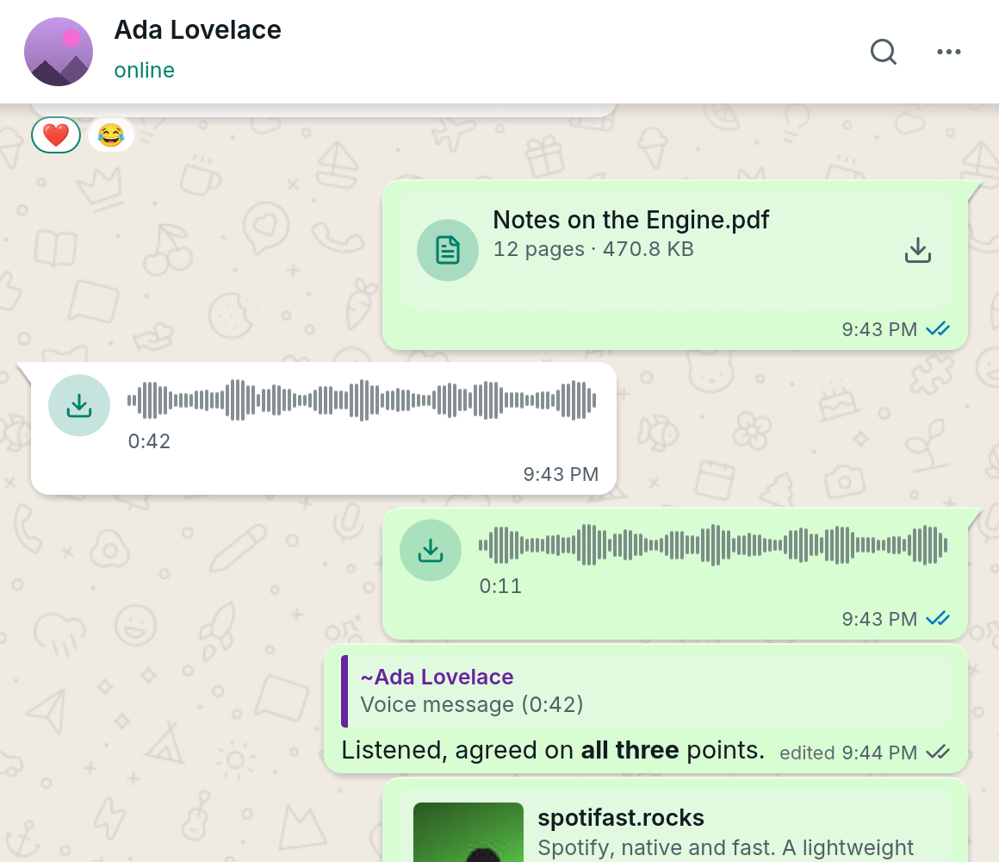
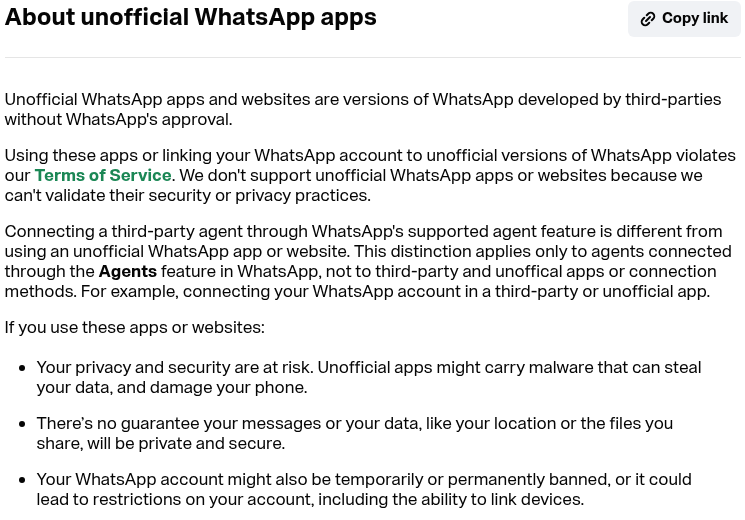
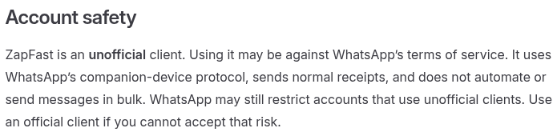
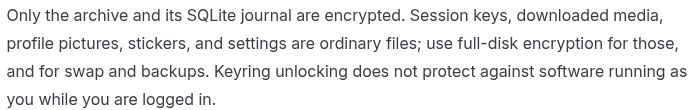

ACCOUNT SAFETY · SOURCE-VERIFIED EXPLAINER
ZapFast: meet the unofficial WhatsApp desktop client
ZapFast is a real open-source project, but it is not an official WhatsApp app. Before trusting it with your chats, understand the ban risk and what stays on your computer.
Read this first
WhatsApp says using or linking an account to unofficial clients violates its Terms of Service and can result in temporary or permanent bans, or linked-device restrictions. ZapFast's own documentation acknowledges the risk. We do not recommend risking an important personal or work number to try it.
This article does not call ZapFast safe, malicious or independently audited. We reviewed public documentation, not the app's binaries or source code for security. No account was linked, no personal data was entered, and messaging, calls and performance were not tested.
What is ZapFast?
The project describes ZapFast as a native desktop WhatsApp client for Linux, macOS and Windows. It is written in Rust with egui and fastframe, and connects through whatsapp-rust rather than embedding a browser engine.
The public GitHub repository links back to zapfast.rocks, contains source code under an MIT licence and has a release history. These are useful provenance checks. They do not prove that a particular installer is free of harmful code or that every privacy claim is correct.
The project credits Carmine Paolino. Haneen is the author of this AiCoN article, not the developer of ZapFast.

Project-provided app screenshot with demonstration content, not an AiCoN account or test. It illustrates the interface only. Source checked 23 November 2026. Tap for unchanged original at native resolution. Phone crop is the same scene, not an additional image. View original image

See the project’s demo
Want to see the interface in motion? Watch ZapFast’s official project demo on GitHub.
This external video is linked from the project’s official repository README. It is developer-provided, not an AiCoN hands-on test or a security endorsement. The unofficial-client and account-ban cautions above still apply. No video has been downloaded or re-hosted here.
Why does it attract attention?
A native Linux desktop client can appeal to people who would rather not keep WhatsApp Web in a browser tab. ZapFast advertises text and voice messages, attachments, notifications, multiple numbers and themes across desktop platforms.
Its website reports fast startup and low idle memory use in the developer's Linux test. Those are the project's measurements, not AiCoN benchmarks. We have not installed it, checked feature reliability or compared resource use on the same machine.
Convenience and speed do not settle the more important questions: whether WhatsApp permits the connection and whether you trust another client with the readable contents of your messages.
What WhatsApp's own policy says
WhatsApp defines unofficial apps and websites as third-party versions developed without its approval. Its Help Center says using them or linking an account to them violates its terms. It also says it cannot validate their security or privacy practices.
The stated consequences include temporary or permanent bans and restrictions on linking devices. This is a general platform policy, not evidence that every ZapFast user has been banned, or a prediction that a particular account will be banned.
Do not confuse a successful connection with platform approval. An app can technically work while remaining unsupported and against the platform's terms.

WhatsApp Help Center states that unofficial-client use or linking violates its terms and can lead to bans or restrictions. Source checked 23 November 2026. Tap for unchanged original at native resolution. Phone crop is the same scene, not an additional image. View original image

What the project itself admits
ZapFast's documentation calls it an unofficial client and says WhatsApp may restrict accounts using it. It says it uses the companion-device protocol and does not automate or send messages in bulk. That does not remove WhatsApp's policy risk.
The project also says it is independent and not affiliated with or endorsed by WhatsApp LLC or Meta. Open source is not the same as official, and an MIT licence does not grant permission to use WhatsApp's service through an unofficial client.

The project itself acknowledges unofficial-client account risk. This warning is separate from WhatsApp’s policy. Source checked 23 November 2026. Tap for unchanged original at native resolution. Phone crop is the same scene, not an additional image. View original image

Privacy is also an endpoint question
ZapFast's documentation says the app becomes a linked companion device. It keeps a local message archive, media and session keys, and can request older history from the phone. That means you are trusting the software that reads and stores messages at that endpoint.
End-to-end encryption protects messages between endpoints. It does not mean an app at an endpoint cannot read messages it is meant to display, nor does it certify that app's local storage or update process.
The project says the message archive uses SQLCipher encryption with its key in the operating system's credential store. Its documentation also explicitly says session keys, downloaded media, profile pictures, stickers and settings are ordinary files. The archive's encryption is not a promise that every local file is encrypted.
That distinction matters on a shared, stolen or compromised computer. A screen lock and a local app lock are not substitutes for protecting the operating-system account, disk and backups.

Project documentation distinguishes its encrypted message archive from ordinary local files including session keys and downloaded media. Source checked 23 November 2026. Tap for unchanged original at native resolution. Phone crop is the same scene, not an additional image. View original image

Does it send everything to the developer?
The project says it has no telemetry and no hosted backend receiving your chats. It documents connections to WhatsApp servers, GIPHY for GIF search, Signal's sticker CDN for imported sticker packs and GitHub for update checks. It also describes contacting websites to build previews for links you type.
These are the developer's documented data flows, not independently captured network traffic. We cannot certify them from reading the site alone. "Local storage" also does not mean "no network connections" or "no trust required".
What AiCoN verified, and what we did not
- Checked the project's own website, repository, release information and account-risk documentation.
- Read WhatsApp's official policy on unofficial clients and compared it with the project's warning.
- Checked the project's explanation of local archives, encryption boundaries and external connections.
- Did not download or run an installer, scan a linking QR code, connect a number, send messages, make calls, or audit the code.
We found a real project and a clear account-policy tradeoff. We did not establish a malware finding, and we did not establish that the app is free of malware. Neither a polished website nor a public repository justifies that guarantee.
What should a reader do?
If losing WhatsApp access would affect your family, studies, customers or work, do not treat this as a low-stakes experiment. Use WhatsApp's official desktop apps where supported. WhatsApp's download page directs users on other operating systems to WhatsApp Web in a browser.
This is a caution-led explanation, not a setup guide. We are deliberately not providing installation commands, account-linking steps or instructions to bypass operating-system warnings. Read both the platform policy and the project's limitations before making any software decision.
Primary sources
- ZapFast project website (Open source)
- Project source repository and unofficial-client disclaimer (Open source)
- Project feature scope and account-risk warning (Open source)
- Project explanation of companion-device architecture and data flows (Open source)
- Project local-storage and encryption documentation (Open source)
- WhatsApp: unofficial apps, privacy and ban risk (Open source)
- WhatsApp: temporarily banned accounts (Open source)
- WhatsApp official desktop options (Open source)
Facts reflect the pages checked on 23 November 2026. Project features and platform policies can change. An article byline is not a developer credit or a security certification.